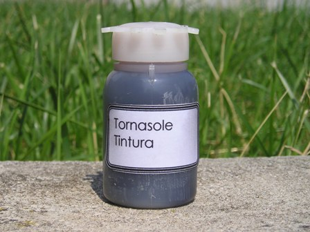
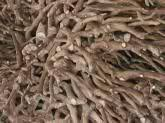
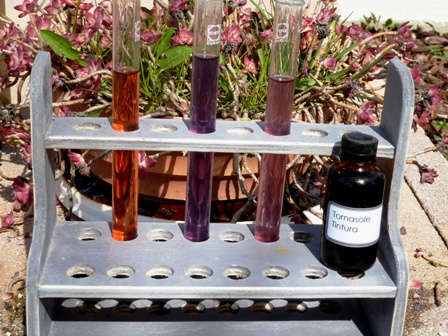

Mi trovo a possedere un po' di tornasole, quello classico, vegetale.
Si tratta di una vecchia tintura di chissà quanti anni fa, la quale, inusata da altrettanto tempo, ho voluto far risorgere per un attimo agli onori del pH, vista anche la bella giornata di fine inverno che mi ha permesso di fare un paio di foto.
Per chi non lo sapesse (che ci sia qualcuno?) il tornasole è un indicatore, cioè una sostanza che cambia colore a seconda dell'acidità, neutralità o basicità dell'ambiente in cui si trova: in sostanza indica il pH della soluzione.
I meno giovani avranno forse visto le vecchie "cartine", delle striscette di carta di colore tra il rosa e il viola chiaro che venivano usate nei laboratori scolastici per la verifica del pH, quando i fondi per i laboratori di chimica c'erano perfino per la scuola media...

L'ho chiamato indicatore fuori moda perchè ormai è un ausilio chimico assolutamente obsoleto, sostituito produttivamente da molti altri indicatori molto più selettivi nel range di pH da controllare, e soprattutto dalle comodissime "cartine universali": sono dei lunghi rotolini di carta assorbente imbevuta di una speciale miscela di indicatori che cambiano una varietà di colori in un range molto ampio, tant'è che dalla tonalità di colore assunta si può apprezzare il valore del pH di una soluzione a step di una unità, da 1 a 12 e in un campo più ristretto anche con maggior definizione.
Il tornasole (come quasi tutti gli indicatori singoli) ha due tonalità di colore: è rosso sotto pH 4,5 e viola-bluastro sopra pH 8,3; tra i due valori, cioè circa alla neutralità, è un brutto rosa smorto.

Questa sostanza naturale è un colorante ricavato da molti vegetali diversi della famiglia dei licheni, a seconda della zona geografica; principalmente si ricavava dalla Roccella tinctoria, che è un lichene diffuso dall'area mediterranea a quella nordica.Da questi licheni, fatti fermentare in bagni basici o ammoniacali (è interessante notare come nei secoli passati l'urina fosse un prodotto molto usato in preparazioni le più varie) si estraeva un tempo l"oricella", un colorante viola usato fin dal XVI secolo per tingere seta e lana.
Il principio colorante fondamentale di questi prodotti è il 7-idrossifenoxazone e suoi derivati, ma sono presenti molti altri costituenti, come le orceine, che sono molecole di 3,5-diidrossitoluene legato variamente al 7-idrossifenoxazone.
Non sono riuscito a trovare una giustificazione certa dell'etimologia del nome italiano tornasole e francese (tournesol); il prefisso "torna" esprime chiaramente il senso di "voltare, girare" come i girasoli si volgono verso il sole, come del resto ricorda anche il prof. Guilizzoni nella sua "Etimologia di alcuni termini scientifico-tecnici".
Ma perchè un così chiaro riferimento ai girasoli, piante estremamente diverse dalla Roccella mi rimane ignoto.
Molto più convincente è invece l'interpretazione per le lingue anglosassoni e nordiche, che lo chiamano litmus: dal vichingo "lit-mosi" (inglese litr "dye" e mosi "moss"), cioè "muschio colorante".
Il nostro arcaico termine "laccamuffa" con il quale si chiamava talvolta il tornasole, deriva sicuramente da questo termine nordico.
Questo storico indicatore, perso terreno nei laboratori chimici e negli opifici tintori, ne ha guadagnato altrettanto nel comune linguaggio per trasposizione figurata, tanto che oggi è diventato comune il modo di dire "cartina di tornasole" per indicare qualcosa che indica o meno lo stato d'essere di una situazione, magari anche politica.
Strana sorte per questa sostanza! Ma guardiamola qui sotto nella sua veste chimica più consona: le tre provette sono rispettivamente acida, basica e neutra, e questi sono i colori reali (che a dire il vero non sono un granchè) del vero tornasole.
